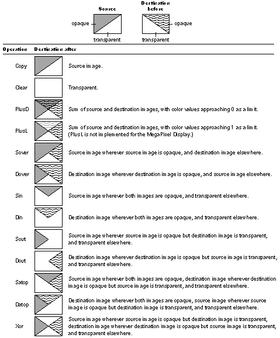
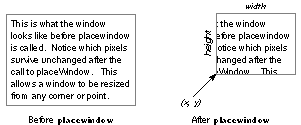

Copyright ©1995 by NeXT Computer, Inc. All Rights Reserved.
| adjustcursor |
| dx dy adjustcursor |
| Moves the cursor location by (dx, dy) from its current location. dx and dy are given in the current coordinate system. If the current device isn't a window, the invalidid error is executed. |
| ERRORS invalidid, stackunderflow, typecheck
SEE ALSO currentmouse, setmouse |
| alphaimage |
| pixelswide pixelshigh bits/sample matrix datasrc0[...datasrcn] multiproc ncolors alphaimage |
| Renders an image whose samples include an alpha component. (Most programmers should use NXImageBitmap() instead of alphaimage.) This operator is similar to the standard colorimage operator (as documented by Adobe Systems). However, note the following: |
| When supplying the data components, alpha is always given last--either as the last data source (datasrcn) if the data is given in separate vectors, or as the last element in a set of interleaved data. | ||
| The ncolors operand doesn't account for alpha--the value of ncolors is the number of color components only. |
| ERRORS invalidid, limitcheck, rangecheck, stackunderflow, typecheck, undefined, undefinedresult |
| basetocurrent |
| bx by basetocurrent cx cy |
| Converts (bx, by) from the current window's base coordinate system to its current coordinate system. If the current device isn't a window, the invalidid error is executed. |
| ERRORS invalidid, stackunderflow, typecheck
SEE ALSO basetoscreen, currenttobase, currenttoscreen, screentobase, screentocurrent |
| basetoscreen |
| bx by basetoscreen sx sy |
| Converts (bx, by) from the current window's base coordinate system to the screen coordinate system. If the current device isn't a window, the invalidid error is executed. |
| ERRORS invalidid, stackunderflow, typecheck
SEE ALSO basetocurrent, currenttobase, currenttoscreen, screentobase, screentocurrent |
| buttondown |
| buttondown isdown |
| Returns true if the left or only mouse button is currently down; otherwise it returns false.
Note: To test whether the mouse button is still down from a mouse-down event, use stilldown instead of buttondown; buttondown will return true even if the mouse button has been released and pressed again since the original mouse-down event. |
| ERRORS none
SEE ALSO currentmouse, rightbuttondown, rightstilldown, stilldown |
| cleartrackingrect |
| trectnum gstate cleartrackingrect |
| Clears the tracking rectangle identified by trectnum, as set by settrackingrect, in the device referred to by gstate (or the current graphics state if gstate is null). If no such rectangle exists, the invalidid error is executed. |
| ERRORS invalidid, stackunderflow, typecheck
SEE ALSO settrackingrect |
| composite |
| srcxsrcywidth height srcgstate destxdestyop composite |
| Performs the compositing operation specified by op between pairs of pixels in two images, a source and a destination. The source pixels are in the window device referred to by the srcgstate graphics state, and the destination pixels are in the current window. If srcgstate is null, the current graphics state is assumed. If either graphics state doesn't refer to a window device, the invalidid error is executed.
The rectangle specified by srcx, srcy, width, and height defines the source image. The outline of the rectangle may cross pixel boundaries due to fractional coordinates, scaling, or rotated axes. The pixels included in the source are all those that the outline of the rectangle encloses or enters. The destination image has the same size, shape, and orientation as the source; destxand destygive destination's location image compared to the source. (Even if the two graphic states have different orientations, the images will not; composite will not rotate images.) Both images are clipped to the frame rectangles of their respective windows. The destination image is further clipped to the clipping path of the current graphics state. The result of a composite operation replaces the destination image. op specifies the compositing operation. The choices for op and the result of each operation are given in the following illustration. |
| ERRORS invalidid, rangecheck, stackunderflow, typecheck
SEE ALSO compositerect, setalpha, setgray, sethsbcolor, setrgbcolor |
|  |
| Figure 5-1. Compositing Operations
compositerect |
| destxdestywidth height op compositerect |
| In general, this operator is the same as the composite operator except that there's no real source image. The destination is in the current graphics state; destx, desty, width, and height describe the destination image in that graphics state's current coordinate system. The effect on the destination is as if there were a source image filled with the color and coverage specified by the graphics state's current color parameter. op has the same meaning as the op operand of the composite operator; however, one additional operation, Highlight, is allowed.
On the MegaPixel Display, Highlight turns every white pixel in the destination rectangle to light gray and every light gray pixel to white, regardless of the pixel's coverage value. Repeating the same operation reverses the effect. (Highlight may act differently on other devices. For example, on displays that assign just one bit per pixel, it would invert every pixel.) Note: The Highlight operation doesn't change the value of a pixel's coverage component. To ensure that the pixel's color and coverage combination remains valid, Highlight operations should be temporary and should be reversed before any further compositing. For compositerect, the pixels included in the destination are those that the outline of the specified rectangle encloses or enters. The destination image is clipped to the frame rectangle and clipping path of the window in the current graphics state. If the current graphics state doesn't refer to a window device, the invalidid error is executed. |
| ERRORS invalidid, rangecheck, stackunderflow, typecheck
SEE ALSO composite, setalpha, setgray, sethsbcolor, setrgbcolor |
| copypage
Warning: This standard PostScript operator has no effect in the NEXTSTEP implementation of the Display PostScript system.
countframebuffers |
| countframebuffers count |
| Returns the number of frame buffers that the Window Server is actually using. |
| ERRORS stackoverflow
SEE ALSO framebuffer |
| countscreenlist |
| context countscreenlist count |
| Returns the number of windows in the screen list that were created by the PostScript context specified by context. This is in contrast with countwindowlist, which returns the number of windows created by the context without regard to their inclusion in the screen list.
If context is 0, all windows in the screen list are counted, without regard to the context that created them. |
| ERRORS invalidid, rangecheck, stackunderflow, typecheck
SEE ALSO countwindowlist, screenlist, windowlist |
| countwindowlist |
| context countwindowlist count |
| Returns the number of windows that were created by the PostScript context specified by context. This is in contrast with countscreenlist, which returns the number of windows in the screen list that were created by the PostScript context specified by context.
If context is 0, all windows are counted, without regard to the context that created them. |
| ERRORS stackunderflow, typecheck
SEE ALSO countscreenlist, screenlist, windowlist |
| currentactiveapp |
| currentactiveapp context |
| Warning: Don't use this operator if you're using the Application Kit.
Returns the active application's context. This operator is used by the window packages to assist with wait cursor operation. |
| ERRORS stackoverflow
SEE ALSO setactiveapp |
| currentalpha |
| currentalpha coverage |
| Returns the coverage parameter of the current graphics state. |
| ERRORS none
SEE ALSO composite, setalpha |
| currentdefaultdepthlimit |
| currentdefaultdepthlimit depth |
| Warning: Don't use this operator if you're using the Application Kit. Use Window's defaultDepthLimit class method instead.
Returns the current context's default depth limit. This value determines a new window's depth limit. |
| ERRORS stackoverflow
SEE ALSO setdefaultdepthlimit, setwindowdepthlimit, currentwindowdepthlimit, currentwindowdepth |
| currentdeviceinfo |
| window currentdeviceinfo min max iscolor |
| Returns device-related information about the current state of window. min and max are the smallest and largest number of bits per sample, respectively, and iscolor is a boolean value indicating whether the device is a color device. |
| ERRORS invalidid, stackunderflow, typecheck |
| currenteventmask |
| window currenteventmask mask |
| Warning: Don't use this operator if you're using the Application Kit. Use Window's eventMask method instead.
Returns the current Window Server-level event mask for the specified window. |
| ERRORS invalidid, stackunderflow, typecheck
SEE ALSO seteventmask |
| currentframebuffertransfer |
| fbnum currentframebuffertransfer redproc greenproc blueproc grayproc |
| Returns the current transfer functions in effect for the framebuffer indexed by fbnum. fbnum ranges from 0 to (countframebuffers |
| ERRORS invalidid, stackunderflow, typecheck
SEE ALSO setframebuffertransfer, countframebuffers, framebuffer |
| currentmouse |
| window currentmouse x y |
| Warning: Don't use this operator if you're using the Application Kit. Use Window's getMouseLocation: instead.
Returns the current x and y coordinates of the mouse location in the base coordinate system of the specified window. If the mouse isn't inside the specified window, these coordinates may be outside the coordinate range defined for the window. If window is 0, the current mouse position is returned relative to the screen coordinate system. |
| ERRORS invalidid, stackunderflow, typecheck
SEE ALSO basetocurrent, basetoscreen, buttondown, rightbuttondown, rightstilldown, setmouse, stilldown |
| currentowner |
| window currentowner context |
| Returns a number identifying the PostScript context that currently owns the specified window. By default, this is the PostScript context that created the window. |
| ERRORS invalidid, stackunderflow, typecheck
SEE ALSO setowner, termwindow, window |
| currentshowpageprocedure |
| window currentshowpageprocedure proc |
| Returns the PostScript procedure that's executed when the showpage operator is executed while the specified window is the current device. |
| ERRORS invalidid, stackunderflow, typecheck
SEE ALSO setshowpageprocedure |
| currentrusage |
| currentrusage ctime utime stime msgsend msgrcv nsignals nvcsw nivcsw |
| Returns information about the current time of day and about resource usage by the Window Server, as provided by the UNIX system call getrusage(). The items returned, and their types, are as follows: |
| Name | Type | Value | |
| ctime | float | Current time in seconds, modulo 10000 | |
| utime | float | User time for the Server process in seconds | |
| stime | float | System time for the Server process in seconds | |
| msgsend | int | Messages sent by the Server to clients | |
| msgrcv | int | Message received by the Server from clients | |
| nsignals | int | Number of signals received by the Server process | |
| nvcsw | int | Number of voluntary context switches | |
| nivcsw | int | Number of involuntary context switches |
| currenttobase |
| cx cy currenttobase bx by |
| Converts (cx,cy) from the current coordinate system of the current window to its base coordinate system. If the current device isn't a window, the invalidid error is executed. |
| ERRORS invalidid, stackunderflow, typecheck
SEE ALSO basetocurrent, basetoscreen, currenttoscreen, screentobase, screentocurrent |
| currenttoscreen |
| cx cy currenttoscreen sx sy |
| Converts (cx, cy) from the current coordinate system of the current window to the screen coordinate system. If the current device isn't a window, the invalidid error is executed. |
| ERRORS invalidid, stackunderflow, typecheck
SEE ALSO basetocurrent, basetoscreen, currenttobase, screentobase, screentocurrent |
| currentuser |
| currentuser uid gid |
| Returns the user id (uid) and the group id (gid) of the user currently logged in on the console of the machine that's running the Window Server. |
| ERRORS stackoverflow |
| currentwaitcursorenabled |
| context currentwaitcursorenabled isenabled |
| Returns the state of context's wait cursor flag. If context is 0, returns the state of the global wait cursor flag. |
| ERRORS invalidid, stackunderflow, typecheck
SEE ALSO setwaitcursorenabled |
| currentwindow |
| currentwindow window |
| Returns the window number of the current window. Executes the invalidid error if the current device isn't a window. |
| ERRORS invalidid
SEE ALSO windowdeviceround |
| currentwindowalpha |
| window currentwindowalpha alpha |
| Returns an integer indicating whether the Window Server is currently storing alpha values for the specified window. Possible alpha values are: |
| Window is opaque; alpha values are explicitly allocated. | ||
| 0 | Alpha values are stored explicitly | |
| 2 | Window is opaque; no explicit alpha |
| ERRORS invalidid, stackunderflow, typecheck |
| currentwindowbounds |
| window currentwindowbounds x y width height |
| Warning: Don't use this operator if you're using the Application Kit. Use Window's getFrame: or Application's getScreenSize: method instead.
Returns the location and size of the window in screen coordinates. Pass 0 for window to get the size of the entire workspace (the smallest rectangle that encloses all active screens). x and y will be in the range [ |
| ERRORS invalidid, stackunderflow, typecheck
SEE ALSO movewindow, placewindow |
| currentwindowdepth |
| window currentwindowdepth depth |
| Warning: Don't use this operator if you're using the Application Kit.
Returns window's current depth. The invalidid error is executed if window doesn't exist. |
| ERRORS invalidid, stackunderflow, typecheck
SEE ALSO setwindowdepthlimit, currentwindowdepthlimit, setdefaultdepthlimit, currentdefaultdepthlimit |
| currentwindowdepthlimit |
| window currentwindowdepthlimit depth |
| Warning: Don't use this operator if you're using the Application Kit. Use Window's depthLimit method instead.
Returns the window's current depth limit, the maximum depth to which the window can be promoted. Unless altered by the setwindowdepthlimit operator, a window's depth limit is equal to its context's default depth limit. The invalidid error is executed if window doesn't exist. |
| ERRORS invalidid, stackunderflow, typecheck
SEE ALSO setwindowdepthlimit, currentwindowdepth, setdefaultdepthlimit, currentdefaultdepthlimit |
| currentwindowdict |
| window currentwindowdict dict |
| Warning: Don't use this operator if you're using the Application Kit.
Returns the specified window's dictionary. |
| ERRORS invalidid, stackunderflow, typecheck
SEE ALSO setwindowdict |
| currentwindowlevel |
| window currentwindowlevel level |
| Returns window's tier. Executes the invalidid error if window doesn't exist. |
| ERRORS invalidid, stackunderflow, typecheck
SEE ALSO setwindowlevel |
| currentwriteblock |
| currentwriteblock doesblock |
| Returns whether the Window Server delays sending data to a client application whenever the Server's output buffer fills. currentwriteblock assumes the current context. If doesblock is true, the Server waits until the buffer can accept more data. If doesblock is false, the Server discards data that can't be accepted immediately. |
| ERRORS none
SEE ALSO setwriteblock |
| dissolve |
| srcxsrcywidth height srcgstate destxdestydelta dissolve |
| The effect of this operation is a blending of a source and a destination image. The first seven arguments choose source and destination pixels as they do for composite. The exact fraction of the blend is specified by delta, which is a floating-point number between 0.0 and 1.0; the resulting image is: |
| delta *source + (1 |
| If srcgstate is null, the current graphics state is assumed. If srcgstate or the current graphics state does not refer to a window device, this operator executes the invalidid error. |
| ERRORS invalidid, stackunderflow, typecheck
SEE ALSO composite |
| dumpwindow |
| dumplevel window dumpwindow |
| Warning: Don't use this operator if you're using the Application Kit.
Prints information about window to the standard output file. Only dumplevel 0 is implemented. The information printed is the position and number of bytes of backing storage for the window. |
| ERRORS invalidid, rangecheck, stackunderflow, typecheck
SEE ALSO dumpwindows |
| dumpwindows |
| dumplevel context dumpwindows |
| Warning: Don't use this operator if you're using the Application Kit.
Prints information about all windows owned by context to the standard output file. If context is 0, it prints information about all windows. Only dumplevel 0 is implemented. |
| ERRORS invalidid, rangecheck, stackunderflow, typecheck
SEE ALSO dumpwindow |
| erasepage |
| erasepage |
| Warning: This standard operator is different in the NEXTSTEP implementation.
Erases the entire window to opaque white. |
| ERRORS invalidid
SEE ALSO copypage, showpage |
| findwindow |
| x y place otherwindow findwindow x' y' window found |
| findwindow starts from a given position in the screen list, as explained below, and searches for the first window below that position that contains the point (x, y). The x and y values are given in screen coordinates.
The starting position is determined by place and otherwindow. place can be Above or Below, and otherwindow is the window number of a window in the screen list. If you specify Above 0, findwindow checks all windows in the screen list. If a window containing the point is found, findwindow returns true, along with the window number and the corresponding location in the base coordinate system of the window. Otherwise, it returns false, and the values of x', y', and window are undefined. |
| ERRORS rangecheck, stackunderflow, typecheck |
| flushgraphics |
| Warning: Don't use this operator if you're using the Application Kit. Use Window's flushWindow method instead.
Flushes to the screen all drawing done in the current buffered window. If the current window is retained or nonretained, flushgraphics has no effect. |
| ERRORS invalidid, stackunderflow, typecheck |
| framebuffer |
| index string framebuffer name slot unit romid x y width height maxdepth |
| Provides information on the active frame buffer specified by index, where index ranges from 0 to countframebuffers The limitcheck error is executed if string isn't large enough to hold name. The rangecheck error is executed if index is out of bounds. |
| ERRORS limitcheck, rangecheck, stackunderflow, typecheck
SEE ALSO countframebuffers |
| frontwindow |
| Warning: Don't use this operator if you're using the Application Kit.
Returns the window number of the frontmost window on the screen. If there aren't any windows on the screen, frontwindow returns 0. |
| ERRORS none
SEE ALSO orderwindow |
| hidecursor |
| hidecursor |
| Removes the cursor from the screen. It remains in effect until balanced by a call to showcursor. |
| ERRORS none
SEE ALSO obscurecursor, showcursor |
| hideinstance |
| x y width height hideinstance |
| In the current window, hideinstance removes any instance drawing from the rectangle specified by x, y, width, and height. x, y, width, and height are given in the window's current coordinate system. |
| ERRORS invalidid, stackunderflow, typecheck
SEE ALSO newinstance, setinstance |
| image |
| dict image |
| Allows a window's graphics state object to be used as a source of sample data. dict must be an image dictionary in which only those keys listed in the following table are significant: |
| Key | Type | Value or Meaning | |
| ImageType | integer | (Required) Must be 2. | |
| XOrigin | real | (Required) X origin of the source rectangle in user space coordinates as specified by the transformation in the DataSource entry. | |
| YOrigin | real | (Required) Y origin of the same. | |
| Width | real | (Required) Width of the same. | |
| Height | real | (Required) Height of the same. | |
| ImageMatrix | array | (Required) The transformation matrix. | |
| DataSource | gstate | (Required) A graphics state object that contains the device that will be used as the source of sample data. This device will also be used to determine the pixel representation for the source, and the color space to be used by the image. | |
| Interpolate | boolean | (Optional) Request for image interpolation. | |
| UnpaintedPath | (various) | (Return value) If some of the pixels in the source weren't available (because of clipping), then the UnpaintedPath entry contains a userpath in the current (destination) user space that encloses the area that couldn't be filled. | |
| PixelCopy | boolean | (Optional) If true, indicates that the source pixels should be copied directly, without going through the normal color conversion, transfer function, or halftoning. The bits per pixel of the source must match the bits per pixel of the destination, otherwise a typecheck error will occur. If false or not present, the pixels will be imaged in the usual way. |
| ERRORS invalidid, rangecheck, stackunderflow, typecheck
SEE ALSO alphaimage |
| initgraphics |
| Warning: This standard operator has additional effects in the NEXTSTEP implementation of the Display PostScript system.
In addition to the effects documented by Adobe, this operator sets the coverage parameter in the current window's graphics state to 1 (opaque) and turns off instance drawing |
| ERRORS none
SEE ALSO hideinstance, newinstance, setalpha, setinstance |
| machportdevice |
| width height bbox matrix hostname portname pixelencoding machportdevice |
| Sets up a PostScript device that can provide a generic rendering service for device-control programs requiring page bitmaps from PostScript documents. For each rendered page, machportdevice sends a Mach message containing the page bitmap to a port that has been registered with the name server on the network.
width and height are integers that determine the number of device pixels for the page. bbox is an array of integers that defines the rectangle (by giving its lower left and upper right corners) that encompasses the imageable area. The array takes the form |
| [lowerLeftX lowerLeftY upperRightX upperRightY] |
| For the common case where the entire raster is imageable, bbox may be expressed as an empty array. If bbox isn't in the correct form, or if any portion of the rectangle it expresses falls outside [0 0 width height], a rangecheck results. The bitmap data is stored in x-axis major indexing order. The device coordinate of the lower left corner of the first pixel is (0,0), the coordinate of the next pixel is (1,0) and so on for the entire scanline. Scanlines are long-word aligned.
matrix is the default transformation matrix for the device. hostname and portname are strings that together identify the port that will receive the Mach messages. If hostname is empty, the local host is assumed. If it's "*", the port is searched for on all available hosts. If (in any case) the port can't be found, a rangecheck results. pixelencoding is a dictionary describing the format for the image data rendered by the Window Server. It should contain these entries: |
| Key | Type | Value |
| samplesPerPixel | integer | Must be 1. | |
| bitsPerSample | integer | Must be 1 or 2. | |
| colorSpace | integer | Color space specification (see below). | |
| isPlanar | boolean | true if sample values are stored in separate arrays (currently must be false). | |
| defaultHalftone | dictionary | Passed to sethalftone during device creation to set up device default halftone. | |
| initialTransfer | procedure | Passed to settransfer during device creation to set up the initial transfer function for device. | |
| jobTag | integer | Allows machportdevice to tag rendering jobs. This value is included in the jobTag field of all printpage messages generated by this device. |
| The value of colorSpace should be one of the following values, predefined in nextdict: |
| Name | Value | Description | |
| NX_OneIsBlackColorSpace | Monochromatic, high sample value is black. | ||
| NX_OneIsWhiteColorSpace | Monochromatic, high sample value is white. | ||
| NX_RgbColorSpace | RGB, (1,1,1) is white. | ||
| NX_CMYKColorSpace | CMYK, (0,0,0,0) is white. |
| Only the following combinations of colorSpace and bitsPerSample are supported: |
| colorSpace | bitsPerSample | |
| NX_OneIsBlackColorSpace | ||
| NX_OneIsWhiteColorSpace |
| These read-only pixel-encoding dictionaries are predefined in nextdict: |
| Name | Description | |
| NeXTLaser-300 | NeXT Laser Printer at 300 dpi resolution | |
| NeXTLaser-400 | NeXT Laser Printer at 400 dpi resolution | |
| NeXTMegaPixelDisplay | MegaPixel Display's 2 bits-per-pixel gray |
| The pagebuffer data is passed out-of-line, appearing in the receiving application's address space. (If the receiver is on the same host, the received pagebuffer references the same physical memory as the Window Server's pagebuffer, and is mapped copy-on-write.) The application should use vm_deallocate() to release the pagebuffer memory when it's no longer needed. The receiver must acknowledge receipt of the data by sending a simple msg_header_t (with msg_id == NX_PRINTPAGEMSGID) back to the remote_port passed in the print message. The Window Server will not continue executing the page description until acknowledgement is received.
If more than one copy of the page is needed (through either the copypage or #copies mechanism) each copy is sent as a separate message. In this case the same pagebuffer will be sent in multiple messages. The letter, legal, and note page types are gracefully ignored. Messaging errors cause the invalidaccess error to be executed. |
| EXAMPLES This example sets up a 400 dpi 8.5 by 11 inch page on a raster with upper left origin (as with the NeXT 400 dpi Laser Printer) and sends its print page messages to the port named "nlp-123" on the local host: |
 /dpi 400 def
/dpi 400 def
 /width dpi 8.5 mul cvi def
/width dpi 8.5 mul cvi def
 /height dpi 11 mul cvi def
/height dpi 11 mul cvi def
 width height % page bitmap dimensions in pixels
width height % page bitmap dimensions in pixels
 [] % use it all
[] % use it all
 [dpi 72 div 0 0 dpi -72 div 0 height] % device transform
[dpi 72 div 0 0 dpi -72 div 0 height] % device transform
 () (nlp-123) % host (local) & port
() (nlp-123) % host (local) & port
 NeXTLaser-400 % pixel-encoding description
NeXTLaser-400 % pixel-encoding description
 machportdevice
machportdevice
 This example sets up an 8 by 10 inch page on the same 8.5 by 11 inch page. It specifies a 400 dpi raster with 1/4 inch horizontal margins and 1/2 inch vertical margins:
This example sets up an 8 by 10 inch page on the same 8.5 by 11 inch page. It specifies a 400 dpi raster with 1/4 inch horizontal margins and 1/2 inch vertical margins:
 /dpi 400 def
/dpi 400 def
 /width dpi 8.5 mul cvi def
/width dpi 8.5 mul cvi def
 /height dpi 11 mul cvi def
/height dpi 11 mul cvi def
 /topdots dpi .5 mul cvi def
/topdots dpi .5 mul cvi def
 /leftdots dpi .25 mul cvi def
/leftdots dpi .25 mul cvi def
 width height % page bitmap dimensions in pixels
width height % page bitmap dimensions in pixels
 [
[
 leftdots
leftdots
 topdots
topdots
 width leftdots sub
width leftdots sub
 height topdots sub
height topdots sub
 ] % imageable area of bounding box
] % imageable area of bounding box
 [
[
 dpi 72 div
dpi 72 div
 0
0
 0
0
 dpi -72 div
dpi -72 div
 leftdots
leftdots
 height topdots sub
height topdots sub
 ] % device transform
] % device transform
 () (nlp-123) % host (local) & port
() (nlp-123) % host (local) & port
 NeXTLaser-400 % pixel-encoding description
NeXTLaser-400 % pixel-encoding description
 machportdevice
machportdevice
| Note that in this example, the user space origin is at the lower left corner of the imageable area (leftdots, height-topdots) in the device raster coordinate system. Usually, the imageable area is meant to correspond with the ultimate destination of the bits. For example, a printer may have a constant-sized pagebuffer with a fixed orientation in the paper path, but be able to accept various sizes of paper. In this case, the page bitmap size will always be fixed, but the imageable area and default device transformation can be adjusted to make the user space origin appear at the lower left corner of each printed page. |
| ERRORS invalidaccess, limitcheck, rangecheck, stackunderflow, typecheck |
| movewindow |
| x y window movewindow |
| Warning: Don't use this operator if you're using the Application Kit. Use Window's moveTo:: method instead.
Moves the lower left corner of the specified window to the screen coordinates (x, y). No portion of the repositioned window can have an x or y coordinate with an absolute value greater than 16000. The operands can be integer, real, or radix numbers; however, they are converted to integers in the Window Server by rounding toward 0. The window need not be the frontmost window. This operator doesn't change window's ordering in the screen list. |
| ERRORS invalidid, rangecheck, stackunderflow, typecheck
SEE ALSO currentwindowbounds, placewindow |
| newinstance |
| newinstance |
| Removes any instance drawing from the current window. |
| ERRORS invalidid
SEE ALSO hideinstance, setinstance |
| nextrelease |
| nextrelease string |
| Returns version information about this release of NEXTSTEP. |
| ERRORS stackoverflow
SEE ALSO osname, ostype |
| NextStepEncoding |
| NextStepEncoding array |
| Pushes the NextStepEncoding vector on the operand stack. This is a 256-element array, indexed by character codes, whose values are the character names for those codes. |
| ERRORS stackoverflow |
| obscurecursor |
| obscurecursor |
| Removes the cursor image from the screen until the next time the mouse is moved. It's usually called in response to typing by the user, so the cursor won't be in the way. If the cursor has already been removed due to an obscurecursor call, obscurecursor has no effect. |
| ERRORS none
SEE ALSO hidecursor, revealcursor |
| orderwindow |
| place otherwindow window orderwindow |
| Warning: Don't use this operator if you're using the Application Kit. Use Window's orderWindow:relativeTo: instead.
Orders window in the screen list as indicated by place and otherwindow. place can be Above, Below, or Out: |
| If place is Above or Below, the window is placed in the screen list immediately above or below the window specified by otherwindow. | ||
| If place is Above or Below and otherwindow is 0, the window is placed above or below all windows in its tier. | ||
| If place is Above or Below, otherwindow must be a window in the screen list; otherwise, the invalidid error is executed. | ||
| If place is Out, otherwindow is ignored, and the window is removed from the screen list, so it won't appear anywhere on the screen. Windows that aren't in the screen list don't receive user events. |
| Note: orderwindow doesn't change which window is the current window. |
| ERRORS invalidid, rangecheck, stackunderflow, typecheck
SEE ALSO frontwindow |
| osname |
| osname string |
| Returns a string identifying the operating system of the Window Server's current operating environment. osname is defined in the statusdict dictionary, a dictionary that defines operators specific to a particular implementation of the PostScript language. osname can be executed as follows: |
 statusdict /osname get exec
statusdict /osname get exec
| ERRORS none
SEE ALSO nextrelease, ostype |
| ostype |
| ostype int |
| Returns a number identifying the operating system of the Window Server's current operating environment. ostype is defined in the statusdict dictionary, a dictionary that defines operators specific to a particular implementation of the PostScript language. ostype can be executed as follows: |
 statusdict /ostype get exec
statusdict /ostype get exec
| ERRORS none
SEE ALSO nextrelease, osname |
| placewindow |
| x y width height window placewindow |
| Warning: Don't use this operator if you're using the Application Kit. Use Window's placeWindow: method instead.
Repositions and resizes the specified window, effectively allowing it to be resized from any corner or point. x, y, width, and height are given in the screen coordinate system. No portion of the repositioned window can have an x or y coordinate with an absolute value greater than 16000; width and height must be in the range from 0 to 10000. The four operands can be integer or real numbers; however, they are converted to integers in the Window Server by rounding toward 0. placewindow places the lower left corner of the window at (x, y) and resizes it to have a width of width and a height of height. The pixels that are in the intersection of the old and new positions of the window survive unchanged (see Figure 5-2). Any other areas of the newly positioned window are filled with the window's exposure color (see setexposurecolor). |
|  |
| Figure 5-2. placewindow
After moving or resizing a window with placewindow, you must execute the initmatrix and initclip operators to reestablish the window's default transformation matrix and default clipping path. |
| ERRORS invalidid, rangecheck, stackunderflow, typecheck
SEE ALSO currentwindowbounds, movewindow, setexposurecolor |
| playsound |
| soundname priority playsound |
| Plays the sound soundname. The Window Server searches for a standard soundfile of the name
The search progresses through the following directories in the order given, stopping when the sound is located. |
| ~/Library/Sounds /LocalLibrary/Sounds /NextLibrary/Sounds |
| No error occurs if the soundfile isn't found: The operator has no effect.
The soundfile's playback is assigned the priority level priority. The playback interrupts any currently playing sound of the same or lower priority level. |
| ERRORS stackunderflow, typecheck |
| posteventbycontext |
| type x y time flags window subtype misc0 misc1 context posteventbycontext success |
| Posts an event to the specified context. The nine parameters preceding the context parameter coincide with the NXEvent structure members (see "Types and Constants" for the definition of the NXEvent structure). The x and y coordinate arguments are passed directly to the receiving context without undergoing any transformations. window is the Window Server's global window number. Returns true if the event was successfully posted to context, and false otherwise.
You use this operator to post an application-defined event to your own application. Use Mach messaging to communicate between applications. |
| ERRORS stackunderflow, typecheck |
| readimage |
| x y width height proc0[... procn-1] string bool readimage |
| Reads the pixels that make up the rectangular image described by x, y, width, and height in the current window. (Most programmers should use NXReadBitmap() instead of this operator.)
Usually the image is the rectangle that has a lower left corner of (x, y) in the current coordinate system and a width and height of width and height. If the axes have been rotated so that the sides of the rectangle are no longer aligned with the edges of the screen, the image is the smallest screen-aligned rectangle enclosing the given rectangle. You typically call sizeimage before readimage (sending it the same x, y, width, and height values you'll use for readimage) to find out ncolors, the number of color components that readimage must read. bool is a boolean value that determines whether readimage reads the alpha component in addition to the color component(s) for each pixel. The total number of components to be read for each pixel, together with the multiproc value returned by sizeimage, determine n, the number of procedures that readimage requires. If multiproc is false, n equals 1. Otherwise, n equals the number of color components plus the alpha component, if present. readimage executes the procedures in order, 0 through n
rounded up to the nearest integer. (The width and bits/sample values are provided by the sizeimage operator. samples is the number of color components plus 1 for the alpha component, if present.) The samples are ordered and packed as they are for the image, colorimage, or alphaimage operator. For example, the alpha component is last and, if necessary, extra bits fill up the last character of every scanline. Note that the contents of string are valid only for the duration of one call to one procedure because the same string is reused on each procedure call. The rangecheck error is executed if string isn't long enough for one scanline. |
| ERRORS rangecheck, stackunderflow, typecheck
SEE ALSO alphaimage, sizeimage |
| revealcursor |
| revealcursor |
| Redisplays the cursor that was hidden by a call to obscurecursor, assuming that the cursor hasn't already been revealed by mouse movement. If the cursor hasn't been removed from the screen by a call to obscurecursor, revealcursor has no effect. |
| ERRORS none
SEE ALSO obscurecursor |
| rightbuttondown |
| rightbuttondown isdown |
| Returns true if the right mouse button is currently down; otherwise it returns false.
Note: To test whether the right mouse button is still down from a mouse-down event, use rightstilldown instead of rightbuttondown; rightbuttondown will return true even if the mouse button has been released and pressed again since the original mouse-down event. |
| ERRORS none
SEE ALSO buttondown, currentmouse, rightstilldown, stilldown |
| rightstilldown |
| eventnum rightstilldown stilldown |
| Returns true if the right mouse button is still down from the mouse-down event specified by eventnum; otherwise it returns false. eventnum should be the number stored in the data component of the event record for an event of type Rmousedown. |
| ERRORS stackunderflow, typecheck
SEE ALSO buttondown, currentmouse, rightbuttondown, stilldown |
| screenlist |
| array context screenlist subarray |
| Fills the array with the window numbers of all windows in the screen list that are owned by the PostScript context specified by context. It returns the subarray containing those window numbers, in order from front to back. If array isn't large enough to hold them all, this operator will return the frontmost windows that fit in the array.
If context is 0, all windows in the screen list are returned. |
| EXAMPLE This example yields an array containing the window numbers of all windows in the screen list that are owned by the current PostScript context: |
 currentcontext
currentcontext
 countscreenlist % find out how many windows
countscreenlist % find out how many windows
 array % create array to hold them
array % create array to hold them
 currentcontext screenlist % fill it in
currentcontext screenlist % fill it in
| ERRORS invalidaccess, invalidid, rangecheck, stackunderflow, typecheck
SEE ALSO countscreenlist, countwindowlist, windowlist |
| screentobase |
| sx sy screentobase bx by |
| Converts (sx, sy) from the screen coordinate system to the current window's base coordinate system. If the current device isn't a window, the invalidid error is executed. |
| ERRORS invalidid, stackunderflow, typecheck
SEE ALSO basetocurrent, basetoscreen, currenttobase, currenttoscreen, screentocurrent |
| screentocurrent |
| sx sy screentocurrent cx cy |
| Converts (sx,sy) from the screen coordinate system to the current coordinate system of the current window. If the current device isn't a window, the invalidid error is executed. |
| ERRORS invalidid, stackunderflow, typecheck
SEE ALSO basetocurrent, basetoscreen, currenttobase, currenttoscreen, screentobase |
| setactiveapp |
| context setactiveapp |
| Warning: Don't use this operator if you're using the Application Kit.
Records the active application's main (usually only) context. setactiveapp is used by the window packages to assist with wait cursor operation. |
| ERRORS invalidid, stackunderflow, typecheck
SEE ALSO currentactiveapp |
| setalpha |
| coverage setalpha |
| Sets the coverage parameter in the current window's graphics state to coverage. coverage must be a number between 0 and 1, with 0 corresponding to transparent, 1 corresponding to opaque, and intermediate values corresponding to partial coverage. This establishes how much background shows through for purposes of compositing. |
| ERRORS stackunderflow, typecheck, undefined
SEE ALSO composite, currentalpha, setgray, sethsbcolor, setrgbcolor |
| setautofill |
| flag window setautofill |
| Applies only to nonretained windows; sets the autofill property of window to the value of flag. If true, newly exposed areas of the window or areas created by placewindow will automatically be filled with the window's exposure color. If false, these areas will not change (typically they will continue to contain the image of the last window in that area). If the current device is not a window, this operator executes the invalidid error. |
| ERRORS invalidid, stackunderflow, typecheck
SEE ALSO placewindow, setexposurecolor, setsendexposed |
| setcursor |
| x y mx my setcursor |
| Sets the cursor image and hot spot. Rather than executing this operator directly, you'd normally use a NXCursor object to define and manage cursors.
A cursor image is derived from a 16-pixel-square image in a window that's generally placed off-screen. The x and y operands specify the upper left corner of the image in the window's current coordinate system. The mx and my operands specify the relative offset (in units of the current coordinate system) from (x, y) to the hot spot, the point in the cursor that coincides with the mouse location. Assuming the current coordinate system is the base coordinate system, mx must be an integer from 0 to 16, and my must be an integer from 0 to The cursor is placed on the screen using Sover compositing. The cursor's opaque areas (alpha = 1) completely cover the background, while its transparent areas (alpha < 1) allow the background to show through to a greater extent depending on the alpha values present in the cursor image. Note: To make the off-screen window transparent, you can use compositerect with Clear. The rangecheck error is executed if the image doesn't lie entirely within the specified window or if the point (mx, my) isn't inside the image. If the current device isn't a window, the invalidid error is executed. |
| ERRORS invalidid, rangecheck, stackunderflow, typecheck
SEE ALSO hidecursor, obscurecursor, setmouse |
| setdefaultdepthlimit |
| depth setdefaultdepthlimit |
| Warning: Don't use this operator if you're using the Application Kit.
Sets the current context's default depth limit to depth. The Window Server assigns each new context a default depth limit equal to the maximum depth supported by the system. When a new window is created, its depth limit is set to its context's default depth limit. These depths are defined in nextdict: |
| Depth | Meaning | |
| NX_TwoBitGray | 1 spp, 2bps, 2bpp, planar | |
| NX_EightBitGray | 1 spp, 8bps, 8bpp, planar | |
| NX_TwelveBitRGB | 3 spp, 4bps, 16bpp, interleaved | |
| NX_TwentyFourBitRGB | 3 spp, 8bps, 32bpp, interleaved |
| where spp is the number of samples per pixel; bps is the number of bits per sample; and bpp is the number of bits per pixel, also known as the window's depth. (The samples-per-pixel value excludes the alpha sample, if present.) planar and interleaved refer to how the sample data is configured. If a separate data channel is used for each sample, the configuration is planar. If data for all samples is stored in a single data channel, the configuration is interleaved.
When an alpha sample is present, the number of bits per pixel doubles for planar configurations (4 for NX_TwoBitGray and 16 for NX_EightBitGray). Interleaved configurations already account for an alpha sample whether or not it's present; thus, the number of bits per pixel for NX_TwelveBitRGB and NX_TwentyFourBitRGB depths remains unchanged. The constant NX_DefaultDepth is also available. If depth is NX_DefaultDepth, the context's default depth limit is set to the Window Server's maximum visible depth, which is determined by which screens are active. The rangecheck error is executed if depth is invalid. |
| ERRORS rangecheck, stackunderflow, typecheck
SEE ALSO currentdefaultdepthlimit, setwindowdepthlimit, currentwindowdepthlimit, currentwindowdepth |
| seteventmask |
| mask window seteventmask |
| Warning: Don't use this operator if you're using the Application Kit. Use Window's setEventMask: method instead.
Sets the Server-level event mask for the specified window to mask. For windows created by the window packages, this mask may allow additional event types beyond those requested by the application. The following operand names are defined for mask: |
| Mask Operand | Event Type Allowed | |
| Lmousedownmask | Mouse-down, left or only mouse button | |
| Lmouseupmask | Mouse-up, left or only mouse button | |
| Rmousedownmask | Mouse-down, right mouse button | |
| Rmouseupmask | Mouse-up, right mouse button | |
| Mousemovedmask | Mouse-moved | |
| Lmousedraggedmask | Mouse-dragged, left or only mouse button | |
| Rmousedraggedmask | Mouse-dragged, right mouse button | |
| Mouseenteredmask | Mouse-entered | |
| Mouseexitedmask | Mouse-exited | |
| Keydownmask | Key-down | |
| Keyupmask | Key-up | |
| Flagschangedmask | Flags-changed | |
| Kitdefinedmask | Kit-defined | |
| Sysdefinedmask | System-defined | |
| Appdefinedmask | Application-defined | |
| Allevents | All event types |
| ERRORS invalidid, stackunderflow, typecheck
SEE ALSO currenteventmask |
| setexposurecolor |
| setexposurecolor |
| Applies to nonretained windows only; sets the exposure color to the color specified by the current color parameter in the current graphics state. The exposure color (white by default) determines the color of newly exposed areas of the window and of new areas created by placewindow. The alpha value of these areas is always 1 (opaque). If the current device is not a window, this operator executes the invalidid error. |
| ERRORS invalidid, stackunderflow, typecheck
SEE ALSO placewindow, setautofill, setsendexposed |
| setflushexposures |
| flag setflushexposures |
| Warning: Don't use this operator if you're using the Application Kit.
Sets whether window-exposed and screen-changed subevents are flushed to clients. If flag is false, no window-exposed or screen-changed events are flushed to the client until setflushexposures is executed with flag equal to true. By default, window-exposed and screen-changed events are flushed to clients. |
| ERRORS invalidid, stackunderflow, typecheck |
| setframebuffertransfer |
| redproc greenproc blueproc grayproc fbnum setframebuffertransfer |
| Warning: This operator should only be used for the development of screen-calibration products.
Sets the framebuffer transfer functions in effect for the framebuffer indexed by fbnum. fbnum ranges from 0 to countframebuffers The initial four operands define the transfer procedures: Monochrome devices use grayproc (but see the Note below), color devices use the others. The procedures must be allocated in shared virtual memory. In addition, the Window Server assumes that the framebuffer values are directly proportional to screen brightness. This is important for the accuracy of dithering, compositing, and similar calculations. The default transfer for NeXT Color Displays is |
 { 1 2.2 div exp } bind dup dup {}
{ 1 2.2 div exp } bind dup dup {}
| Note: setframebuffertransfer is unsupported on the current generation of NeXT monochrome displays.
It's possible to make framebuffer transfer functions persist beyond the lifetime of the Window Server by storing a property in the NetInfo screens database. In the local NetInfo domain, /localconfig/screens holds the configuration information for the screens known to the Window Server (MegaPixel, NeXTdimension, and so on). These specify the layout and activation state of the screen. The NetInfo defaultTransfer property can contain a string of PostScript code suitable for execution by the setframebuffertransfer operator (without the fbnum parameter). For example, the following represents the NetInfo configuration for a NeXTdimension screen with a default gamma of 2.0: |
 localhost:1# niutil -read . /localconfig/screens/NeXTdimension
localhost:1# niutil -read . /localconfig/screens/NeXTdimension
 name: NeXTdimension
name: NeXTdimension
 slot: 2
slot: 2
 unit: 0
unit: 0
 defaultTransfer: {1 2.0 div exp } dup dup dup
defaultTransfer: {1 2.0 div exp } dup dup dup
 bounds: 0 1120 0 832
bounds: 0 1120 0 832
 active: 1
active: 1
 _writers: *
_writers: *
| The defaultTransfer property is used to configure the screen each time the Window Server starts up. This allows monitor calibration products to save their settings so the next time the Window Server starts up, the new values will be used. Note that in some cases, the NetInfo configuration state for a monitor will not have active equal to 1, although the monitor is being used by the Window Server. If there are no active screens (screens that are explicitly marked as being active), the Window Server uses a suitable default, however, the other NetInfo properties for that screen are ignored. Thus, you must be sure that the screen for which you are adding a defaultTransfer value has active set to 1. |
| ERRORS invalidid, stackunderflow, typecheck
SEE ALSO setframebuffertransfer, countframebuffers, framebuffer |
| setinstance |
| flag setinstance |
| Sets the instance-drawing mode in the current graphics state on (if flag is true) or off (if flag is false). |
| ERRORS stackunderflow, typecheck
SEE ALSO hideinstance, newinstance |
| setmouse |
| x y setmouse |
| Moves the mouse location (and, correspondingly, the cursor) to (x, y), given in the current coordinate system. If the current device isn't a window, the invalidid error is executed. |
| ERRORS invalidid, stackunderflow, typecheck
SEE ALSO adjustcursor, basetocurrent, currentmouse, screentocurrent |
| setowner |
| context window setowner |
| Sets the owning PostScript context of window to context. The window is terminated automatically when context is terminated. |
| ERRORS invalidid, stackunderflow, typecheck
SEE ALSO currentowner, termwindow, window |
| setsendexposed |
| flag window setsendexposed |
| Warning: Don't use this operator if you're using the Application Kit.
Controls whether the Window Server generates a window-exposed subevent (of the kit-defined event) for window under the following circumstances: |
| Nonretained window: When an area of the window is exposed, or a new area is created by placewindow | ||
| Retained or buffered window: When an area of the window that had instance drawing in it is exposed |
| By default, window-exposed subevents are generated under these circumstances. In any case, the window-exposed subevent isn't flushed to the application until the Window Server receives another event. |
| ERRORS invalidid, stackunderflow, typecheck
SEE ALSO setflushexposures, placewindow, setautofill, setexposurecolor |
| setshowpageprocedure |
| proc window setshowpageprocedure |
| Warning: Don't use this operator if you're using the Application Kit.
Sets the PostScript procedure that's executed, for the specified window, when the showpage procedure is executed. proc must be allocated in shared virtual memory. |
| ERRORS invalidid, stackunderflow, typecheck
SEE ALSO currentshowpageprocedure |
| settrackingrect |
| x y width height leftbool rightbool insidebool userdata trectnum gstate |
| settrackingrect |
| or x y width height optionarray trectnum gstate settrackingrect |
| Important: The settrackingrect operator boasts two form, distinguished by the number and contents of the operands that are passed. The operator itself looks at its operands to determine how to proceed. The common portion of the two forms is described immediately below. Attention is then paid to the features that set the forms apart.
Sets a tracking rectangle in the window referred to by gstate to the rectangle specified by x, y, width, and height (in the coordinate system of that graphics state). If gstate is null, the window referred to by the current graphics state is used. trectnum is an arbitrary integer that can be any number except 0. It's used to identify tracking rectangles; no two tracking rectangles can share the same trectnum value. Any number of tracking rectangles may be set in a single window. The tracking rectangle will remain in effect until cleartrackingrect is called, or until another tracking rectangle with the same trectnum is set.
Form 1 |
| x y width height leftbool rightbool insidebool userdata trectnum gstate |
| settrackingrect |
| In this form, the application receives mouse-exited and mouse-entered events as the cursor leaves and reenters the visible portion of the tracking rectangle. In the event record for a mouse-exited or mouse-entered event, the data component will contain trectnum along with the event number of the last mouse-down event.
userdata is an arbitrary integer that you assign to the tracking rectangle. Since several tracking rectangles can share the same userdata value, you can use userdata to identify an object in your application that will be notified when a mouse-entered or mouse-exited event occurs in any of the tracking rectangles. You can specify that mouse-entered and mouse-exited events be generated only if certain mouse buttons are down. If leftbool is true, the events will be generated only when the left mouse button is down; likewise for rightbool and the right mouse button. If both leftbool and rightbool are true, the events will be generated only if both mouse buttons are down. If both leftbool and rightbool are false, the position of the mouse buttons isn't taken into account in generating mouse-entered and mouse-exited events. settrackingrect causes the Window Server to repeatedly compare the current cursor position to the previous one to see whether the cursor has moved from inside the tracking rectangle to outside it or vice versa. insidebool tells settrackingrect whether to consider the initial cursor position to be inside or outside the tracking rectangle: |
| If insidebool is true and the cursor is initially outside the tracking rectangle, a mouse-exited event is generated. | ||
| If insidebool is false and the cursor is initially inside the tracking rectangle, a mouse-entered event is generated. |
| Form 2 |
| x y width height optionarray trectnum gstate settrackingrect |
| In this form, settrackingrect sets special event-gathering attributes of a rectangle (events are not generated when the boundary is crossed).
optionarray contains key-value pairs that define the attributes that you're interested in. An empty option array is meaningless and will raise a rangecheck error. The following keys are currently defined: |
| Key | Type | Meaning | |
| Pressure | Treat non-zero pressure values as a mouse-down (false by default) | ||
| Coalesce | Coalesce mouse motion events (true by default) |
| EXAMPLE This example turns pressure on and coalescing off (thereby switching the default values): |
 0 0 10 10 [/Pressure true /Coalesce false] 1 null settrackingrect
0 0 10 10 [/Pressure true /Coalesce false] 1 null settrackingrect
| ERRORS invalidid, rangecheck, stackunderflow, typecheck
SEE ALSO cleartrackingrect |
| setwaitcursorenabled |
| bool context setwaitcursorenabled |
| Allows applications to enable and disable wait cursor operation in the specified context. If context is 0, setwaitcursorenabled sets the global wait cursor flag, which overrides all per-context settings. If the global flag is set to false, the wait cursor is disabled for all contexts. |
| ERRORS invalidid, stackunderflow, typecheck
SEE ALSO currentwaitcursorenabled |
| setwindowdepthlimit |
| depth window setwindowdepthlimit |
| Warning: Don't use this operator if you're using the Application Kit. Use Window's setDepthLimit: method instead.
Sets the depth limit of window to depth. These depths are defined in nextdict: |
| Depth | Meaning | |
| NX_TwoBitGray | 1 spp, 2bps, 2bpp, planar | |
| NX_EightBitGray | 1 spp, 8bps, 8bpp, planar | |
| NX_TwelveBitRGB | 3 spp, 4bps, 16bpp, interleaved | |
| NX_TwentyFourBitRGB | 3 spp, 8bps, 32bpp, interleaved |
| where spp is the number of samples per pixel; bps is the number of bits per sample; and bpp is the number of bits per pixel, also know as the window's depth. (The samples-per-pixel value excludes the alpha sample, if present.) planar and interleaved refer to how the sample data is configured. If a separate data channel is used for each sample, the configuration is planar. If data for all samples is stored in a single data channel, the configuration is interleaved.
When an alpha sample is present, the number of bits per pixel doubles for planar configurations (4 for NX_TwoBitGray and 16 for NX_EightBitGray). Interleaved configurations already account for an alpha sample whether or not it's present; thus, the number of bits per pixel for NX_TwelveBitRGB and NX_TwentyFourBitRGB depths remains unchanged. Another constant, NX_DefaultDepth, is defined as the default depth limit in the Window Server's current context. If depth is NX_DefaultDepth, then the window's depth limit is set to the context's default depth limit. If the resulting depth is lower than the window's current depth, the window's data is dithered down to this depth, which may result in the loss of graphic information. The rangecheck error is executed if depth is invalid. The invalidid error is executed if window doesn't exist. |
| ERRORS invalidid, rangecheck, stackunderflow, typecheck
SEE ALSO currentwindowdepthlimit, setdefaultdepthlimit, currentdefaultdepthlimit, currentwindowdepth |
| setwindowdict |
| dict window setwindowdict |
| Warning: Don't use this operator if you're using the Application Kit.
Sets the dictionary for window to dict. |
| ERRORS invalidid, stackunderflow, typecheck
SEE ALSO currentwindowdict |
| setwindowlevel |
| level window setwindowlevel |
| Sets the window's tier to that specified by level. Window tiers constrain the action of the orderwindow operator; see orderwindow for more information.
You rarely use this operator. To make a panel float above other windows, use the Panel class's setFloatingPanel: method. Attempting to change the level of workspaceWindow executes the invalidaccess error. (workspaceWindow is a PostScript name whose value is the window number of the workspace window.) |
| ERRORS invalidaccess, invalidid, rangecheck, stackunderflow, typecheck
SEE ALSO currentwindowlevel, orderwindow |
| setwindowtype |
| type window setwindowtype |
| Warning: Don't use this operator if you're using the Application Kit. Use Window's setBackingType: method instead.
Sets the window's buffering type to that specified. Currently, the only allowable type conversions are from Buffered to Retained and from Retained to Buffered. All other possibilities execute the limitcheck error. |
| ERRORS invalidaccess, invalidid, limitcheck, stackunderflow, typecheck
SEE ALSO window |
| setwriteblock |
| bool setwriteblock |
| Sets how the Window Server responds when its output buffer to a client application fills. If bool is true, the Server defers sending data (event records, error messages, and so on) to that application until there's once again room in the output buffer. In this way, no output data is lost--this is the Server's default behavior. If bool is false, the Server ignores the state of the output buffer: If the buffer fills and there's more data to be sent, the new data is lost. setwriteblock operates on the current context.
Most programmers won't need to use this operator. If you do use it, make sure that you disable the Window Server's default behavior only during the execution of your own PostScript code. If it's disabled while Application Kit code is being executed, errors will result. |
| ERRORS stackoverflow, typecheck
SEE ALSO currentwriteblock |
| showcursor |
| showcursor |
| Restores the cursor to the screen if it's been hidden with hidecursor, unless an outer nested hidecursor is still in effect (because it hasn't yet been balanced by a showcursor). For example: |
 % cursor is showing initially
% cursor is showing initially
 . . .
. . .
 hidecursor % hides the cursor
hidecursor % hides the cursor
 . . .
. . .
 hidecursor % cursor stays hidden
hidecursor % cursor stays hidden
 . . .
. . .
 showcursor % cursor still hidden due to first hidecursor
showcursor % cursor still hidden due to first hidecursor
 . . .
. . .
 showcursor % displays the cursor
showcursor % displays the cursor
| ERRORS none
SEE ALSO hidecursor |
| showpage |
| showpage |
| Warning: This standard operator is different in the NEXTSTEP implementation of the Display PostScript system.
This has no effect if the current device is a window; otherwise, it functions as documented by Adobe. |
| ERRORS none
SEE ALSO copypage, erasepage |
| sizeimage |
| x y width height matrix sizeimage pixelswide pixelshigh bits/sample matrix |
| multiproc ncolors |
| Returns various parameters required by the readimage operator when reading the image contained in the rectangle given by x, y, width, and height in the current window. (See readimage for more information.)
pixelswide and pixelshigh are the width and height of the image in pixels. The operand matrix is filled with the transformation matrix from user space to the image coordinate system and pushed back on the operand stack. The other results of this operator describe the window device and are dependent on the window's depth. Each pixel has ncolors color components plus one alpha component; the value of each component is described by bits/sample bits. If multiproc is true, readimage will need multiple procedures to read the values of the image's pixels. Here are the values that sizeimage returns for windows of various depths: |
| Window Depth | ncolors | bits/sample | multiproc | |
| NX_TwoBitGray | 1 | 2 | true | |
| NX_EightBitGray | 1 | 8 | true | |
| NX_TwelveBitRGB | 3 | 4 | false | |
| NX_TwentyFourBitRGB | 3 | 8 | false |
| ERRORS stackunderflow, typecheck
SEE ALSO alphaimage, readimage |
| stilldown |
| eventnum stilldown stilldown |
| Returns true if the left or only mouse button is still down from the mouse-down event specified by eventnum; otherwise it returns false. eventnum should be the number stored in the data component of the event record for an event of type Lmousedown. |
| ERRORS stackunderflow, typecheck
SEE ALSO buttondown, currentmouse, rightbuttondown, rightstilldown |
| termwindow |
| window termwindow |
| Warning: Don't use this operator if you're using the Application Kit. Use Window's close method instead.
Marks window for destruction. If the window is in the screen list, it's removed from the screen list and the screen. The given window number will no longer be valid; any attempt to use it will execute the invalidid error. The window will actually be destroyed and its storage reclaimed only after the last reference to it from a graphics state is removed. This can be done by resetting the device in the graphics state to another window or to the null device. Note: After you use the termwindow operator, if the terminated window had been the current window, you should use the nulldevice operator to remove references to it. |
| ERRORS invalidid, stackunderflow, typecheck
SEE ALSO window, windowdevice, windowdeviceround |
| window |
| x y width height type window window |
| Warning: Don't use this operator if you're using the Application Kit. Create a Window object instead.
Creates a window that has a lower left corner of (x, y) and the indicated width and height. x, y, width, and height are given in the screen coordinate system. No portion of a window can have an x or y coordinate with an absolute value greater than 16000; width and height must be in the range from 0 to 10000. Exceeding these limits executes the rangecheck error. The four operands can be integer or real numbers; however, they are converted to integers in the Window Server by rounding toward 0. This operator returns the new window's window number, a nonzero integer that's used to refer to the window. type specifies the window's buffering type as Buffered, Retained, or Nonretained. The new window won't be in the screen list; you can put it there with the orderwindow operator. Windows that aren't in the screen list don't appear on the screen and don't receive user events. The window operator also does the following: |
| Sets the origin of the window's base coordinate system to the lower left corner of the window | ||
| Sets the window's clipping path to the outer edge of the window | ||
| Fills the window with opaque white and sets the window's exposure color to white |
| Note: This operator does not make the new window the current window; to do that, use windowdeviceround or windowdevice. |
| ERRORS invalidid, rangecheck, stackunderflow, typecheck
SEE ALSO setexposurecolor, termwindow, windowdeviceround |
| windowdevice |
| window windowdevice |
| Sets the current device of the current graphics state to the given window device. It also sets the origin of the window's default matrix to the lower left corner of the window. One unit in the user coordinate system is made equal to 1/72 of an inch. The clipping path is reset to a rectangle surrounding the window. Other elements of the graphics state remain unchanged. This matrix becomes the default matrix for the window: initmatrix will reestablish this matrix.
windowdevice is rarely used in NEXTSTEP since the coordinate system it establishes isn't aligned with the pixels on the screen. Use the related operator windowdeviceround to create a coordinate system that is aligned. Don't use this operator lightly, as it creates a new matrix and clipping path. It's significantly more expensive than a setgstate operator. |
| ERRORS invalidid, stackunderflow, typecheck
SEE ALSO windowdeviceround |
| windowdeviceround |
| window windowdeviceround |
| Sets the current device of the current graphics state to the given window device. It also sets the origin of the window's default matrix to the lower left corner of the window. One unit in the user coordinate system is made equal to the width of one pixel. The clipping path is reset to a rectangle surrounding the window. Other elements of the graphics state remain unchanged. This matrix becomes the default matrix for the window: initmatrix will reestablish this matrix.
Don't use this operator blithely, as it creates a new matrix and clipping path. It's significantly more expensive than a setgstate operator. |
| ERRORS invalidid, stackunderflow, typecheck
SEE ALSO windowdevice |
| windowlist |
| array context windowlist subarray |
| Fills the array with the window numbers of all windows that are owned by the PostScript context specified by context. It returns the subarray containing those window numbers, in order from front to back. If array isn't large enough to hold them all, this operator returns the frontmost windows that fit in the array. |
| EXAMPLE This example yields an array containing the window numbers of all windows that are owned by the current PostScript context: |
 currentcontext
currentcontext
 countwindowlist % find out how many windows
countwindowlist % find out how many windows
 array % create array to hold them
array % create array to hold them
 currentcontext windowlist % fill it in
currentcontext windowlist % fill it in
| ERRORS stackunderflow, typecheck
SEE ALSO countscreenlist, countwindowlist, screenlist |